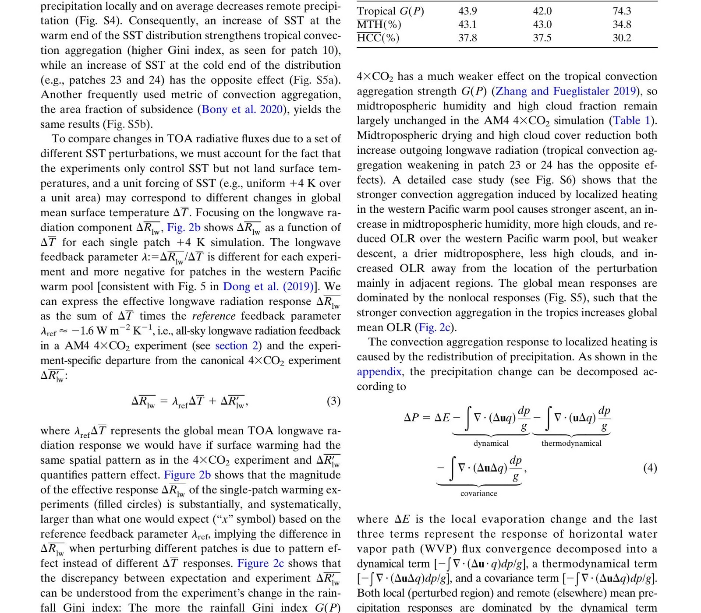
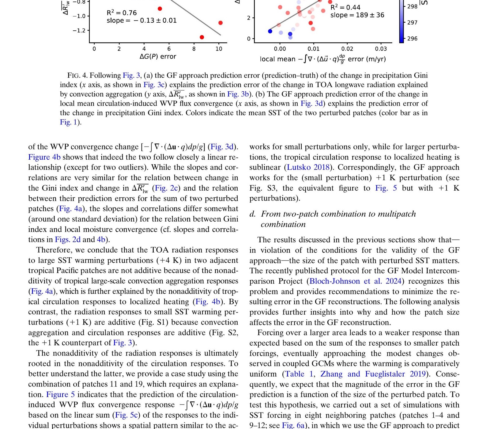
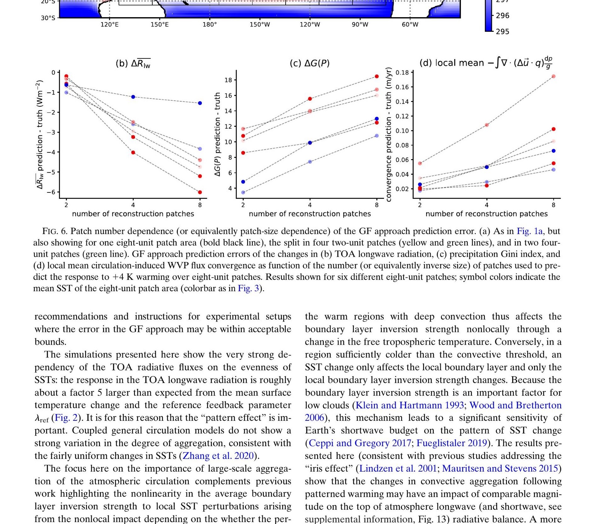

GF Overestimation
Linear superposition overestimates multipatch TOA radiative responses for large SST perturbations
Forcing and Feedback • Radiative Feedbacks
Journal of Climate (2024)
Targeted SST perturbation experiments test Green’s-function additivity and show where nonlinear cloud-convection responses limit linear TOA-radiation reconstruction.

GF Overestimation
Linear superposition overestimates multipatch TOA radiative responses for large SST perturbations
Nonadditive Dynamics
Convection aggregation and circulation-induced moisture transport responses are sublinear
Sensitivity Bias Risk
Longwave cooling can be overestimated, implying underestimated effective climate sensitivity
Paper Citation
Quan, H., B. Zhang, C. Wang, and S. Fueglistaler, 2024: Nonlinear Radiative Response to Patterned Global Warming due to Convection Aggregation and Nonlinear Tropical Dynamics. Journal of Climate, 37, 5675-5693. https://doi.org/10.1175/JCLI-D-23-0539.1
When does the Green's-function linear-superposition framework fail for patterned SST warming, and what physical mechanism drives the nonadditivity in TOA radiative response?
Rendered from Quan et al. (2024), Journal of Climate, https://doi.org/10.1175/JCLI-D-23-0539.1.
Figure A
Figure B

Figure C

The study provides a mechanistic explanation for why pattern-effect reconstructions can appear accurate in weak-perturbation or historical-like regimes but break under larger future-warming perturbations: tropical aggregation and circulation responses are not linearly additive.